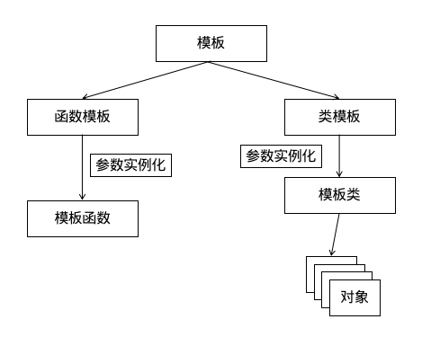

C++模板
本章大纲
模板
模板（Template）是 C++ 语言**代码重用**和**多态性**的一个集中表现。
模板是提供这样一个转换机制：由程序员定义一种操作或一个类，而该操作或类却可以适应几乎所有的数据类型。在一定意义上，模板类似宏定义或函数重载，但它书定更为简洁，使用更加灵活，适应性更强。
模板分为**函数模板**和**类模板**。 函数模板为程序员编写**通用函数**提供了 一种手段；类模板则为程序员设计**通用类**奠定了基础。

- 类模板实际上是函数模板的推广。
- 类模板用于实现类 所需数据的类型参数化。类模板主要用于**数据存储（容器）类**。
- 类模板在表示数据结构如数组、表、图等显得特别重要， 他们表示和算法不受所包含的元素类型的影响。
函数模板
函数模板声明和定义
| C++ |
|---|
1
2
3
4
5
6
7
8
9
10
11
12
13
14 | template <类型形式参数表> //class T 或typename T
返回类型 函数名(形参表) {
//函数体
}
template <typename T>
void foo(T t) {
std::cout << t << '\n';
}
template <class T>
void bar(T t) {
std::cout << t << '\n';
}
|
函数模板的调用
显示类型调用
| C++ |
|---|
| foo<int>(5); //foo<>(5);
foo<double>(5.5); //foo<>(5.5);
foo<char>('a'); //foo<>('a');
|
隐式类型推导
| C++ |
|---|
| foo(5);
foo(5.5);
foo('a');
|
函数模板和普通函数的区别
- 普通函数只可以有一种数据类型相匹配。函数模板有多种类型
- 隐式推导优先使用普通函数，只有普通函数不匹配才使用函数模板
- 函数模板只有在调用时，才会构建函数，而普通函数是在编译时
- 普通函数调用时候可以发生自动类型转换，而函数模板不行
函数模板和普通函数的调用顺序
- 若函数模板和普通函数都可以实现，优先调用普通函数
- 可以通过空模板参数列表来强制调用函数模板
- 函数模板可以重载
- 如果函数模板可以产生更好的匹配，优先调用函数模板
类模板语法
| C++ |
|---|
| template <类型形式参数表>
class 类名 {
//类声明体
}；
|
模板参数表中的内容可以为：
类模板成员函数语法
| C++ |
|---|
| template <类型形式参数表>
返回类型 类名<类型名表>::函数名（形参表）
{
//成员函数定义体
}
|
对象创建语法
| C++ |
|---|
1
2
3
4
5
6
7
8
9
10
11
12
13
14
15
16
17
18
19
20
21
22
23
24
25
26
27
28
29
30
31
32
33
34
35
36
37
38
39
40
41 | #include <iostream>
using namespace std;
template <class T> // template<typename T>
class Max // 声明类模板Max
{
private:
T item1, item2, item3; // 类型为T,T在该类的对象生成时具体化
public:
Max() {}
Max(T thefirst, T thesecond, T thethird);
T GetMaxItem(); // 求得3个元素中的最大值并按类型T返回
void SetItem(T thefirst, T thesecond, T thethird); // 设置类中的3个元素的值
};
// 类模板的实现
template <class T>
Max<T>::Max(T thefirst, T thesecond, T thethird)
: item1(thefirst), item2(thesecond), item3(thethird) {
return;
}
template <class T>
void Max<T>::SetItem(T thefirst, T thesecond, T thethird) {
item1 = thefirst;
item2 = thesecond;
item3 = thethird;
}
template <class T>
T Max<T>::GetMaxItem() {
T maxitem;
maxitem = item1 > item2 ? item1 : item2;
maxitem = maxitem > item3 ? maxitem : item3;
return maxitem;
}
// 主程序
int main() {
Max<int> nmyMax(1, 2, 3);
Max<double> dblmyMax(1.2, 1.3, -1.4);
cout << nmyMax.GetMaxItem() << endl;
cout << dblmyMax.GetMaxItem() << endl;
return 0;
}
|
本章总结
参考链接
- C++函数模板_coal miner的博客
- C++模板函数_摇花手当雨伞的博客-CSDN博客
- 使用C++11变长参数模板 处理任意长度、类型之参数实例_yanxiangtianji的博客-CSDN博客